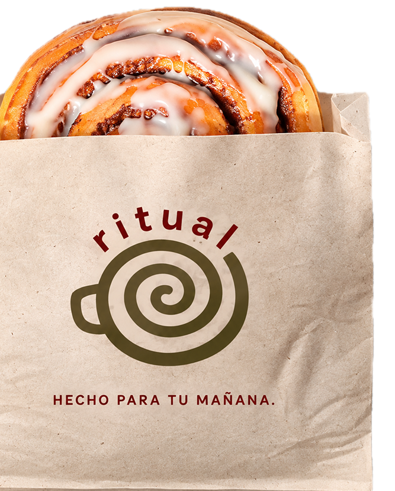
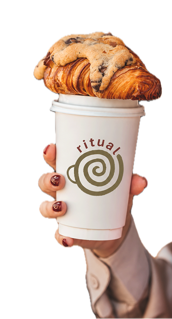
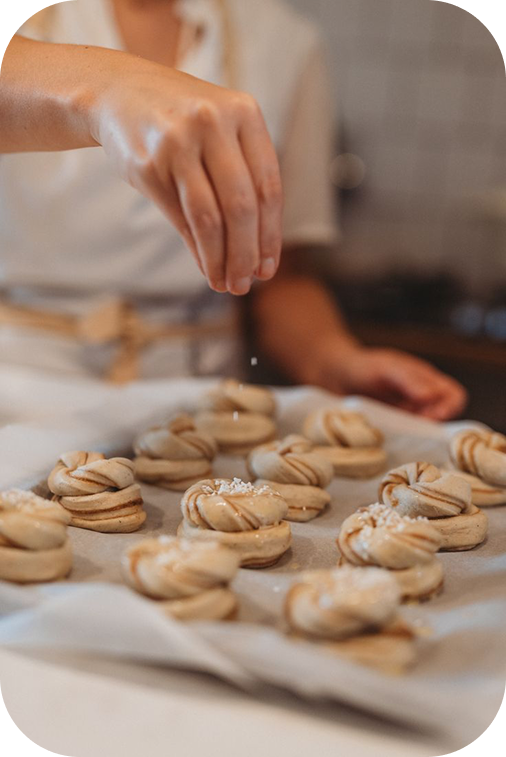

01. DE PASO
Para cuando cada minuto cuenta.
Café de especialidad y desayunos listos para llevar.

Nuestro ritual
ritual nace para acompañar distintas formas de empezar el día: un café al paso, un desayuno sin apuro o un espacio donde trabajar.

Distintas formas de disfrutar un mismo lugar.
Para cuando cada minuto cuenta.
Café de especialidad y desayunos listos para llevar.
Quedate un rato.
Desayuná en ritual y disfrutá tu mañana con tiempo.
Tu café también puede ser tu escritorio.
Wifi, cargadores y un espacio pensado para trabajar o estudiar.
Todo empieza antes de que llegues.
